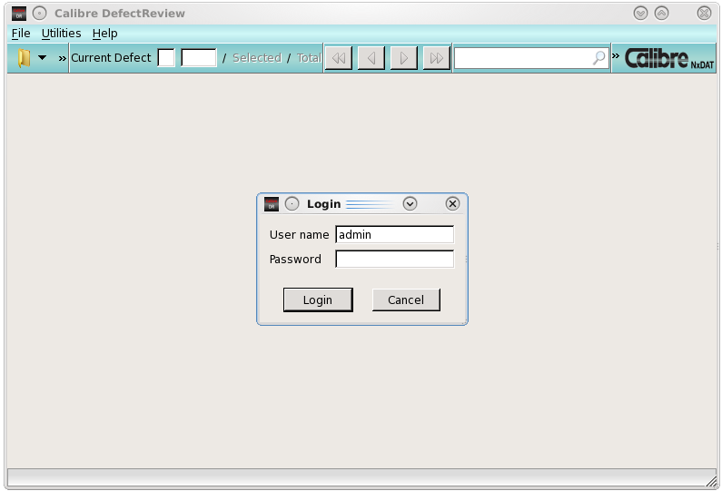

To begin using
Calibre DefectReview on Microsoft® Windows® hosts, invoke the Calibre DefectReview
executable and then log in.
Procedure
- Select Start > All Programs > DefectAnalysisTool
> Defect Analysis Tool.
Alternatively, double-click
the shortcut icon on the desktop.
The Calibre DefectReview launcher
appears as shown in Figure 2.
Figure 2. Calibre DefectReview
Launcher Screen
- Log in to the tool by entering
a user name and password on the login screen. When logging in for
the first time, use the default user name and password. The following
are the default settings:
User Name —
admin
Default Password —
welcome
User Type —
privileged
There are three user levels:
privileged, normal and restricted. These are further described in
the section “User Permissions Overview”.
Note: When you log in for the first time or if
the End User License Agreement (EULA) was not accepted before, a
License Agreement dialog appears, and you must click “I accept
the agreement” in order to begin using Calibre DefectReview.
The user name and password
are case-sensitive. They may contain spaces and special characters,
such as @. There is no character limit.